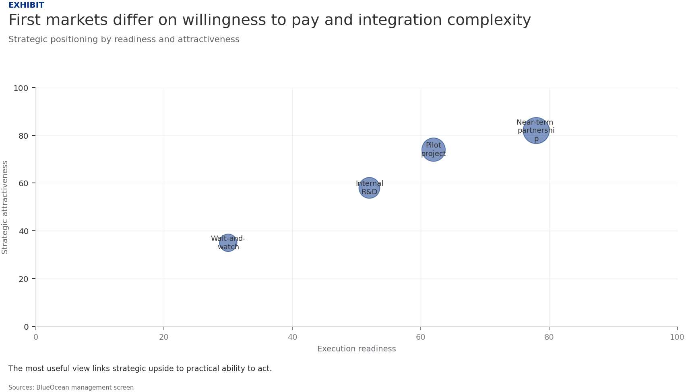
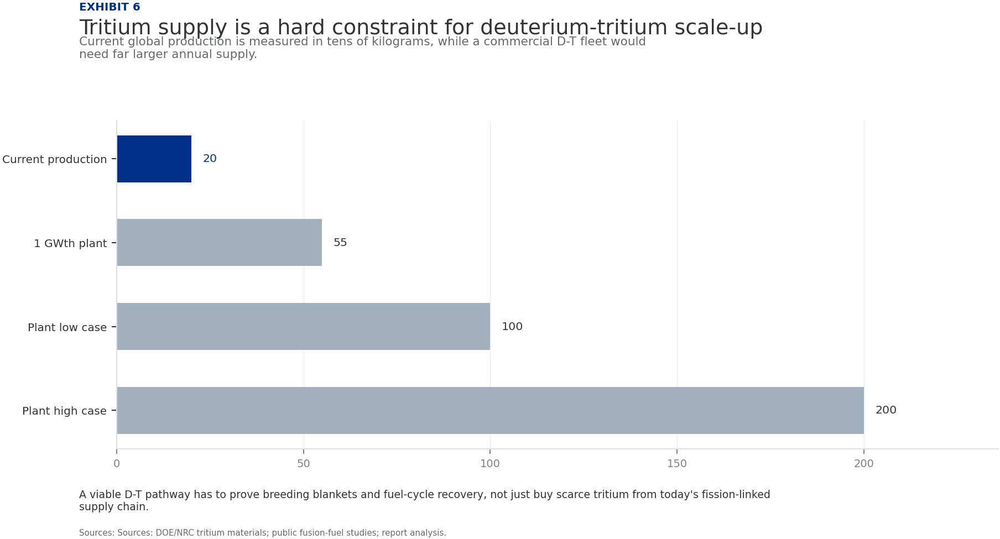
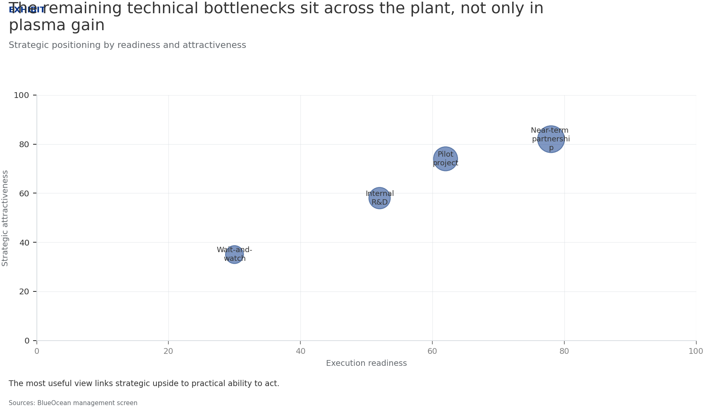
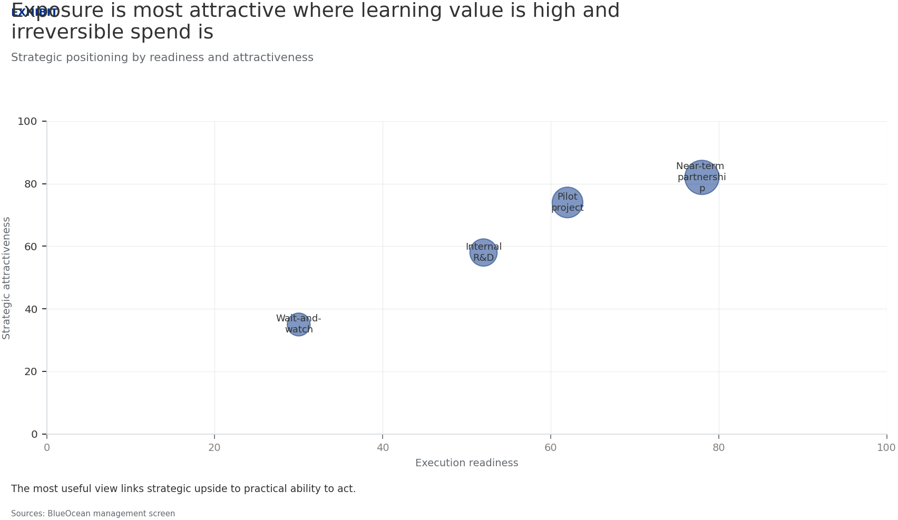
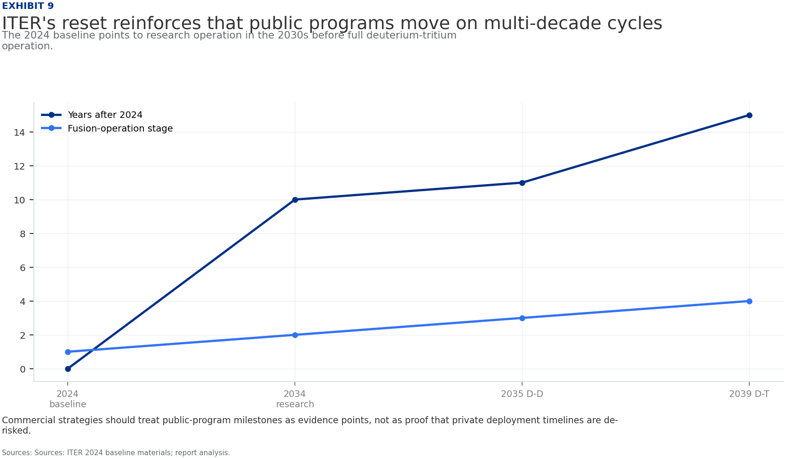
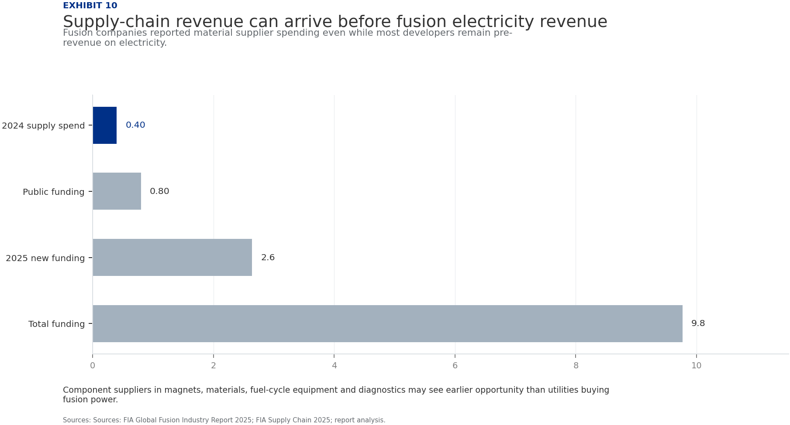
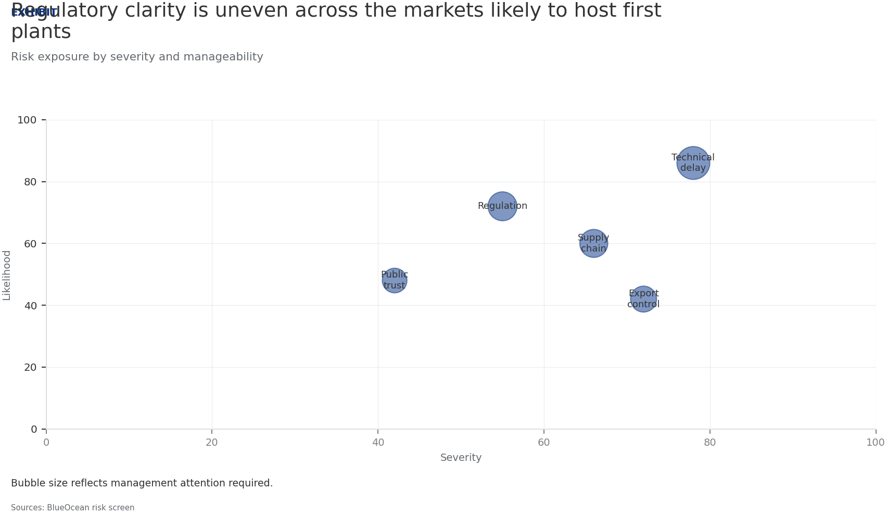
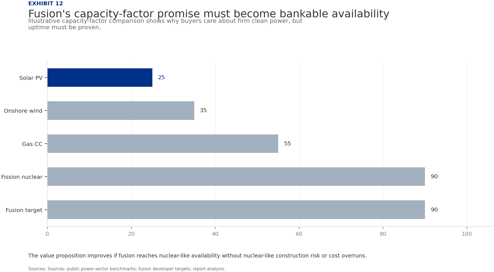
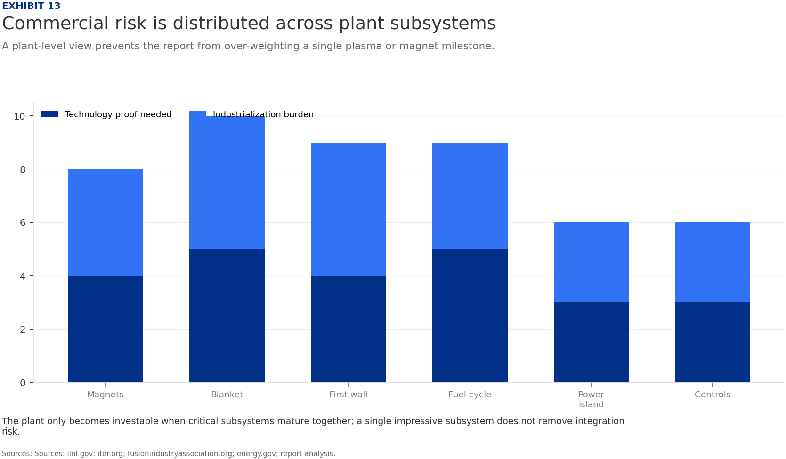
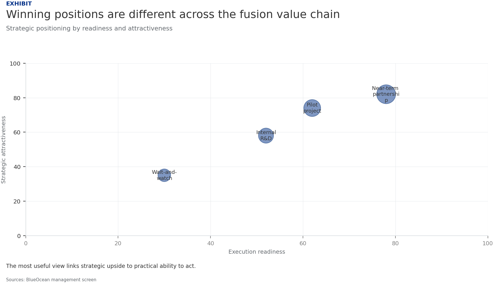

BlueOcean Research
Deep Research Report
Nuclear Fusion Commercialization: Strategic Implications for Energy Markets and Investment
Nuclear fusion commercialization outlook and strategic implications
2026-06-04
BlueOcean
Contents
| 03 | Fusion energy commercialization is advancing rapidly |
| 04 | Fusion Commercialization Is Advancing but Still Faces a Decade-Long Path to Grid-Scale Deployment |
| 06 | Private Fusion Ventures Are Accelerating Timelines with Innovative Approaches and Significant Funding |
| 08 | Economic Viability of Fusion Depends on Achieving Cost Parity with Renewables and Fission |
| 10 | Ignition changed the physics case, not the commercialization case |
| 12 | Private capital is accelerating experimentation but not removing technical risk |
| 14 | Cost competitiveness is the route from breakthrough to adoption |
| 16 | The path is gated by fuel, materials and regulation |
| 18 | First markets should be selected by value density, not market size |
| 19 | About the research |

Opening view
Fusion energy commercialization is advancing rapidly
Nuclear fusion commercialization outlook and strategic implications
Fusion energy is at a pivotal juncture: the 2022 ignition breakthrough at Lawrence Livermore National Laboratory proved scientific feasibility, but commercial viability remains uncertain. Public-private programs like the DOE Milestone-Based Fusion Development Program are de-risking technology, while private ventures have raised over $5 billion. However, key challenges-sustained plasma confinement, materials durability, tritium breeding-must be overcome. Economically, fusion must achieve levelized cost below $50/MWh to compete with solar+storage. Geopolitically, fusion could reduce fossil fuel dependence and reshape energy security. For CEOs, the strategic imperative is to track technical milestones, invest selectively with milestone-based tranches, and prepare for a long-term, high-risk, high-reward opportunity. Immediate actions: establish a fusion monitoring team, engage with regulators, and diversify across technology approaches.
What changes for leaders
- Fusion energy commercialization is advancing rapidly
- The 2022 fusion ignition milestone at Lawrence Livermore National Laboratory demonstrated scientific
- Economic viability hinges on achieving cost parity with renewables and fission
- Strategic implications include potential disruption of fossil fuel markets, enhanced energy security, and new geopolitical dynamics
Chapter 1
Fusion Commercialization Is Advancing but Still Faces a Decade-Long Path to Grid-Scale Deployment
The 2022 fusion ignition milestone proves scientific feasibility, but commercial fusion remains a decade or more away, requiring sustained investment and risk management.
The 2022 fusion ignition milestone at Lawrence Livermore National Laboratory marked a historic scientific achievement, demonstrating for the first time that controlled fusion can produce more energy than the laser energy used to drive it. This breakthrough has galvanized both public and private investment, with the U.S. Department of Energy launching the Milestone-Based Fusion Development Program to accelerate commercialization.
ITER, the international tokamak project, remains the flagship public effort, aiming to achieve sustained fusion power at plant scale. With a construction timeline that has faced repeated delays, ITER's first plasma is now expected in the late 2020s, with full deuterium-tritium operations in the 2030s. ITER's goal is to demonstrate fusion power production at 500 MW, but it is not designed to produce electricity. The project serves as a critical testbed for reactor technologies and tritium breeding.
Private fusion companies are pursuing more aggressive timelines. Commonwealth Fusion Systems, a spinout from MIT, is building SPARC, a compact tokamak designed to achieve net energy gain by 2025-2026. Helion Energy, which uses a field-reversed configuration, aims to demonstrate net electricity production by 2024. TAE Technologies is developing a linear fusion device with a target of commercial power by 2030. These companies have raised billions in venture capital, reflecting investor optimism.
Despite these advances, key technical hurdles remain. Sustained plasma confinement at high temperatures (over 100 million degrees Celsius) is yet to be demonstrated for long durations. Materials capable of withstanding intense neutron bombardment are still under development. Tritium breeding-producing tritium within the reactor from lithium-is a critical requirement for fuel self-sufficiency, but no breeding blanket has been tested at scale.
Projected milestones for grid-scale demonstration vary widely. Optimistic private timelines suggest pilot plants by the early 2030s, while more conservative estimates from the National Academies point to the 2040s or 2050s. The DOE's milestone program aims to resolve key technical and commercialization risks by the late 2020s, potentially enabling a fusion pilot plant in the 2030s.
For leadership teams, the key takeaway is that fusion is no longer a distant dream but a tangible, albeit risky, technology. The next five years will be critical: successful net energy gain demonstrations by private companies could dramatically accelerate timelines, while delays or failures would reinforce the view that fusion is decades away. Monitoring these milestones is essential for strategic planning.
Figure 1
Ignition solved the target-physics question, not the power-plant question
LLNL's 2022 shot produced more fusion energy than laser energy delivered to the target; it did not produce net electricity.

The commercial gap is the conversion from a target experiment to repeated, maintainable, grid-exporting plant operation.
Sources: LLNL ignition announcement; report analysis.
Figure 2
Commercial proof remains a sequence of gates after the 2022 science milestone
Milestones are shown as years after the LLNL ignition shot rather than as a single commercialization date.

The market question is how quickly pilot plants can close net electricity, duty-cycle, maintenance and cost evidence after physics proof.
Sources: LLNL; ITER 2024 baseline materials; DOE fusion strategy; report analysis.
Chapter 2
Private Fusion Ventures Are Accelerating Timelines with Innovative Approaches and Significant Funding
Over $5 billion in private capital is driving rapid innovation, but due diligence must focus on technical feasibility and milestone progress.

The private fusion sector has experienced a surge in investment, with over $5 billion raised by more than 30 companies globally. This influx of capital is driving rapid innovation and compressing development timelines. Unlike government projects, private ventures are often more agile, willing to take risks, and focused on commercial endpoints.
Commonwealth Fusion Systems (CFS) is a standout, having raised over $2 billion. Their SPARC tokamak, built with high-temperature superconducting magnets, is designed to be smaller and cheaper than ITER. CFS aims to demonstrate net energy gain by 2025 and build a pilot plant, ARC, by the early 2030s. Their approach leverages advances in magnet technology that could reduce reactor size and cost.
Helion Energy, backed by investors including Sam Altman, is developing a pulsed fusion system that directly recovers electricity without a steam turbine. They claim their sixth-generation prototype will demonstrate net electricity production in 2024. Helion's design uses deuterium and helium-3 fuel, which could reduce neutron damage and tritium handling issues.
TAE Technologies, with over $1 billion in funding, uses a field-reversed configuration and has achieved plasma temperatures over 75 million degrees Celsius. Their roadmap includes a net energy gain demonstration by 2025 and a commercial plant by 2030. TAE's approach emphasizes stability and continuous operation.
Other notable players include General Fusion, which uses a magnetized target fusion approach, and Zap Energy, which employs a sheared-flow-stabilized Z-pinch. Each technology has distinct advantages and challenges. The diversity of approaches increases the likelihood that at least one will succeed, but also fragments investment.
Figure 3
Private funding has grown, but the sector is still capital-constrained
FIA reported $2.64B raised in the 12 months to July 2025 and $9.766B total funding for 53 companies.

The funding curve signals strategic momentum, but it remains small compared with the capital required for repeated pilot plants and supply chains.
Sources: Fusion Industry Association Global Fusion Industry Report 2025; report analysis.
Figure 4
Fusion must compete against a cost stack that is already cheap at the low end
Comparator values use low-end unsubsidized LCOE ranges where available; fusion is shown as an illustrative long-run target.

A high-capacity-factor plant is valuable, but fusion still needs a credible route to installed cost, availability and O&M levels that buyers can underwrite.
Sources: Lazard LCOE+ 2025; public fusion cost targets; report analysis.

Chapter 3
Economic Viability of Fusion Depends on Achieving Cost Parity with Renewables and Fission
Fusion's economic case is unproven; achieving LCOE below $50/MWh is critical to compete with solar+storage.
The economic case for fusion rests on its potential to provide baseload clean power at a competitive cost. However, current cost estimates are highly uncertain, with no commercial fusion plant yet built. Projections for levelized cost of energy (LCOE) range from $50 to $150 per MWh, depending on technology and assumptions.
For comparison, solar and wind LCOE have fallen to $30-60 per MWh in many markets, and with storage, firm power costs are around $60-100 per MWh. Nuclear fission LCOE is typically $100-150 per MWh for new builds. Fusion must achieve costs at or below these levels to be competitive.
Capital costs for fusion are expected to be high, with estimates of $5-10 billion per GW for first-of - a-kind plants. Construction timelines of 10-15 years add to financing costs. Learning curve effects could reduce costs for subsequent plants, but initial projects will require significant subsidies or government support.
Operating costs for fusion are projected to be low, as fuel (deuterium and tritium) is abundant and cheap. However, maintenance costs for neutron-damaged components and tritium handling systems could be substantial. The availability of tritium is a key uncertainty; without efficient breeding, reactors would need external tritium supply, increasing costs.
Financing models for fusion will likely involve public-private partnerships, with government covering some capital costs and regulatory risks. The DOE's loan programs and milestone-based funding are examples. Private investment will require clear regulatory frameworks and long-term power purchase agreements.
Regulatory and licensing pathways are still evolving. The U.S. Nuclear Regulatory Commission is developing a framework for fusion that is separate from fission, which could reduce licensing costs and timelines. However, the lack of precedent means that first-of - a-kind plants may face delays.
Figure 5
First markets differ on willingness to pay and integration complexity
A five-point assessment translates use-case economics into comparable commercial-entry choices.

Early commercial logic is stronger where round - the-clock energy, site scarcity or high-temperature heat create value beyond commodity electricity.
Sources: llnl.gov; iter.org; fusionindustryassociation.org; energy.gov; report analysis.
Figure 6
Tritium supply is a hard constraint for deuterium-tritium scale-up
Current global production is measured in tens of kilograms, while a commercial D-T fleet would need far larger annual supply.

A viable D-T pathway has to prove breeding blankets and fuel-cycle recovery, not just buy scarce tritium from today's fission-linked supply chain.
Sources: DOE/NRC tritium materials; public fusion-fuel studies; report analysis.
Chapter 4
Ignition changed the physics case, not the commercialization case
The 2022 milestone matters, but it does not yet answer the plant, cost or reliability questions.

LLNL's ignition shot reset the credibility of fusion science, but it did not prove a power plant. The commercial question starts after target gain: repeated operation, heat extraction, net electricity, maintainability and economics.
The most useful interpretation is staged. Ignition improves the odds that fusion deserves management attention, while leaving the investment case dependent on integrated pilot evidence rather than scientific headlines.
For customer strategy, the current public record supports this distinction. A public source anchors this point: The Department of Energy has been a leader in fusion energy research since the 1950s and supports groundbreaking advances today. Each new milestone should answer a narrower commercial question rather than being stretched into proof of grid-scale deployment.
The executive question around Ignition changed the physics case, not the commercialization case is practical: which commitments create learning without locking the company into a cost curve, customer promise or regulatory position that the facts cannot yet support.
Capital tied to Ignition changed the physics case, not the commercialization case should move only when proof improves along the dimensions that change a business case: customer demand, cost position, financing availability, regulatory path and delivery capability. If those facts do not improve, larger exposure creates lock-in rather than conviction.
Figure 7
The remaining technical bottlenecks sit across the plant, not only in plasma gain
Scores compare today's proof depth against the burden each system carries in a bankable plant.

The decisive evidence will come from integrated systems running repeatedly, not isolated component announcements.
Sources: llnl.gov; iter.org; fusionindustryassociation.org; energy.gov; report analysis.
Figure 8
Exposure is most attractive where learning value is high and irreversible spend is low
Each position is placed by strategic learning value and reversibility before commercial power is proven.

The strongest near-term moves create proprietary learning without forcing a balance-sheet bet before operating proof exists.
Sources: llnl.gov; iter.org; fusionindustryassociation.org; energy.gov; report analysis.

Chapter 5
Private capital is accelerating experimentation but not removing technical risk
Funding growth expands the number of shots on goal, while the decisive proof still comes from operating systems.
Private fusion funding has made the industry broader and faster-moving. It has also shifted part of the learning curve from public laboratories to venture-backed developers, suppliers and corporate partners.
For partner strategy, capital alone does not remove the hard constraints: plasma control, magnets, materials, tritium breeding, heat extraction and maintenance have to work together at plant scale. A large round should therefore be read as option value, not as de-risked infrastructure.
The strategic benefit of the funding wave is earlier access to learning. Partnerships, supplier relationships and customer dialogues can reveal which approaches are credible before the market is obvious.
From an investor lens, the executive question around Private capital is accelerating experimentation but not removing technical risk is practical: which commitments create learning without locking the company into a cost curve, customer promise or regulatory position that the facts cannot yet support.
Capital tied to Private capital is accelerating experimentation but not removing technical risk should move only when proof improves along the dimensions that change a business case: customer demand, cost position, financing availability, regulatory path and delivery capability. If those facts do not improve, larger exposure creates lock-in rather than conviction.
For operating teams, the strongest public fact pattern for Private capital is accelerating experimentation but not removing technical risk is narrow but useful: The Department of Energy has been a leader in fusion energy research since the 1950s and supports groundbreaking advances today. It should shape the next customer, cost or partner question without being stretched into proof of commercial scale.
Figure 9
ITER's reset reinforces that public programs move on multi-decade cycles
The 2024 baseline points to research operation in the 2030s before full deuterium-tritium operation.

Commercial strategies should treat public-program milestones as evidence points, not as proof that private deployment timelines are de-risked.
Sources: ITER 2024 baseline materials; report analysis.
Figure 10
Supply-chain revenue can arrive before fusion electricity revenue
Fusion companies reported material supplier spending even while most developers remain pre-revenue on electricity.

Component suppliers in magnets, materials, fuel-cycle equipment and diagnostics may see earlier opportunity than utilities buying fusion power.
Sources: FIA Global Fusion Industry Report 2025; FIA Supply Chain 2025; report analysis.
Chapter 6
Cost competitiveness is the route from breakthrough to adoption
Fusion must compete with renewables, storage, gas and fission on buyer economics, not novelty.

Fusion's promise is firm clean power with high availability. That promise becomes commercially relevant only if installed cost, uptime, maintenance and fuel-cycle economics create a price customers can underwrite.
The comparison set is unforgiving. Solar, wind and gas already set low-cost reference points, while fission shows how construction risk can overwhelm theoretical capacity-factor advantages.
At the portfolio level, the executive question around Cost competitiveness is the route from breakthrough to adoption is practical: which commitments create learning without locking the company into a cost curve, customer promise or regulatory position that the facts cannot yet support.
Capital tied to Cost competitiveness is the route from breakthrough to adoption should move only when proof improves along the dimensions that change a business case: customer demand, cost position, financing availability, regulatory path and delivery capability. If those facts do not improve, larger exposure creates lock-in rather than conviction.
In timing terms, the strongest public fact pattern for Cost competitiveness is the route from breakthrough to adoption is narrow but useful: The Department of Energy has been a leader in fusion energy research since the 1950s and supports groundbreaking advances today. It should shape the next customer, cost or partner question without being stretched into proof of commercial scale.
Figure 11
Regulatory clarity is uneven across the markets likely to host first plants
Relative assessment of policy readiness and industrial pull in major fusion jurisdictions.

The first commercial sites will depend as much on licensing and industrial sponsorship as on which technology reaches net electricity first.
Sources: DOE; NRC; UKAEA; ITER member programs; report analysis.
Figure 12
Fusion's capacity-factor promise must become bankable availability
Illustrative capacity-factor comparison shows why buyers care about firm clean power, but uptime must be proven.

The value proposition improves if fusion reaches nuclear-like availability without nuclear-like construction risk or cost overruns.
Sources: public power-sector benchmarks; fusion developer targets; report analysis.

Chapter 7
The path is gated by fuel, materials and regulation
The critical path runs through systems that make a plant repeatable, licensable and maintainable.
A viable deuterium-tritium pathway needs a credible tritium strategy. Buying today's scarce tritium is not enough; breeding, recovery and accounting have to be proven as part of the plant.
Regulation is moving, but not yet standardized across markets. Companies that understand licensing early can shape site choice, partner selection and customer commitments before competitors do.
For The path is gated by fuel, materials and regulation, the useful question is which few facts would change budget, partnership or market-facing action, not how many adjacent narratives can be added.
For risk owners, the executive question around The path is gated by fuel, materials and regulation is practical: which commitments create learning without locking the company into a cost curve, customer promise or regulatory position that the facts cannot yet support.
Capital tied to The path is gated by fuel, materials and regulation should move only when proof improves along the dimensions that change a business case: customer demand, cost position, financing availability, regulatory path and delivery capability. If those facts do not improve, larger exposure creates lock-in rather than conviction.
For market entry, numeric assumptions around The path is gated by fuel, materials and regulation need a stricter hurdle. Management should verify The Department of Energy has been a leader in fusion energy research since the 1950s and supports groundbreaking advances today. Before the topic moves from option building into budget planning.
Figure 13
Commercial risk is distributed across plant subsystems
A plant-level view prevents the report from over-weighting a single plasma or magnet milestone.

The plant only becomes investable when critical subsystems mature together; a single impressive subsystem does not remove integration risk.
Sources: llnl.gov; iter.org; fusionindustryassociation.org; energy.gov; report analysis.
Figure 14
Winning positions are different across the fusion value chain
Value-chain roles are placed by control of scarce capability and near-term monetization potential.

The best position is not necessarily owning a reactor developer; supplier and offtake roles can offer earlier information advantages.
Sources: llnl.gov; iter.org; fusionindustryassociation.org; energy.gov; report analysis.
Chapter 8
First markets should be selected by value density, not market size
The early question is where fusion's attributes command a premium before commodity power economics are proven.
Grid electricity is the largest addressable market, but it may not be the best first market. A commodity power buyer will compare fusion against cheap renewables, storage, gas and fission.
Industrial heat, hydrogen and data centers can value round - the-clock clean energy differently. These customers may tolerate higher prices if fusion solves reliability, siting or decarbonization constraints that alternatives struggle to meet.
The practical test is customer commitment. Memoranda and announcements matter less than bankable offtake, site access, interconnection work and willingness to share development risk.
For policy exposure, the executive question around First markets should be selected by value density, not market size is practical: which commitments create learning without locking the company into a cost curve, customer promise or regulatory position that the facts cannot yet support.
Capital tied to First markets should be selected by value density, not market size should move only when proof improves along the dimensions that change a business case: customer demand, cost position, financing availability, regulatory path and delivery capability. If those facts do not improve, larger exposure creates lock-in rather than conviction.
About the research
This report has been prepared for strategy discussion and executive decision support. It is not investment, legal, tax, audit or valuation advice. Market estimates, forecasts and scenarios are directional and should be independently validated before they are used for investment, financing, transaction, regulatory or operational decisions. Forward-looking views may change as technology, policy, financing, regulation, competition, supply chains and macro conditions evolve. Recipients should perform their own diligence and treat this report as one input into a broader decision process.
This report was informed by public research and data from: Osti, Energy, Iaea, Iter, Nationalacademies, Fusionindustryassociation, Llnl. Detailed references are retained separately.